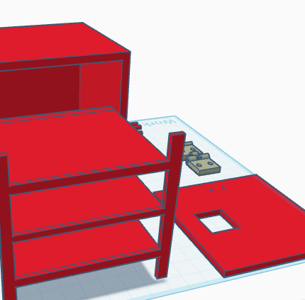

Semana 3 y 4: Tema elegido
Creación de un Mini Centro de Datos Didáctico. Este bloque incluye investigación de usuarios, mapas de problema y prototipado.
Resumen del proyecto
El objetivo es desarrollar un modelo funcional que permita a los estudiantes visualizar, experimentar y comprender redes seguras combinando teoría y práctica.
Empatizar con las necesidades
Limitaciones: los estudiantes no tienen experiencia práctica con redes seguras, lo que limita su comprensión y habilidades.
Comunidad afectada
- Estudiantes de redes y comunicaciones
- Docentes que requieren herramientas didácticas
- Instituciones educativas
Lluvias de ideas y prototipos
Se realizaron múltiples bocetos y prototipos iniciales para validar el concepto del mini centro.